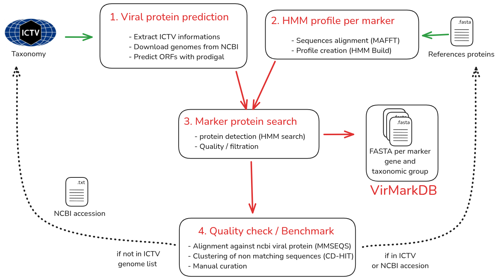

Workflow
VirMarkDB documents how the database is generated, how marker-specific HMM profiles are built and applied, and how the database is refined through benchmark-guided detection of missing or underrepresented diversity. The same pipeline is applied uniformly across the three viral groups currently covered — giant viruses, phages, and RNA viruses — each genome being searched only against the marker-group profiles relevant to its taxonomic scope.

This pipeline runs identically for all viral groups. The branching point is mapfile.tsv: it assigns each marker gene to a taxonomic scope (Nucleocytoviricota, Uroviricota, or Orthornavirae), and uses that scope to route each genome to only the HMM profiles relevant to it. The diagram above should be read as running per scope, not globaly.
Input and provenance
ICTV resources
The initial genome manifest and taxonomy come from the ICTV Virus Metadata Resource VMR_MSL41.v1.20260320 (released 2026-03-20), providing virus names, ICTV identifiers, full taxonomy, GenBank accessions, genome composition, and host-source metadata.
Additional genome inputs
Manually added genomes (not yet covered by the ICTV VMR) are listed in input/manual_genomes_ncbi.tsv and merged using the same taxonomy fields.
Show input/manual_genomes_ncbi.tsv (excerpt)
| virus_id | Family | Genus | Species | Source | Virus_names_abrv | Host_source |
|---|---|---|---|---|---|---|
| NC_075136 | Allomimiviridae | Oceanusvirus | O. kaneohense | MANUAL_NCBI | TsV1 | algae |
| PP728251 | Phycodnaviridae | Prasinovirus | P. micromonas polaris | MANUAL_NCBI | MpoV-46T | algae |
| NC_076895 | Yaraviridae | Yaravirus | Y. brasiliensis | MANUAL_NCBI | BHMG | protists |
Marker-group configuration
input/mapfile.tsv is the single source of truth for which marker genes are processed against which taxonomic scopes. Each row defines one marker group: a marker gene, a taxonomic scope, a reference protein set, and the HMM profile built from it. The pipeline uses this file at every stage: reference preparation, HMM construction, and HMM search. So each genome is only searched against the profiles relevant to its taxonomic scope.
Show input/mapfile.tsv
| group_id | taxo_rank | taxo_value | marker | marker_group_id |
|---|---|---|---|---|
| nucleocytoviricota | Phylum | Nucleocytoviricota | majorcapsid | majorcapsid_nucleocytoviricota |
| nucleocytoviricota | Phylum | Nucleocytoviricota | dnapol | dnapol_nucleocytoviricota |
| nucleocytoviricota | Phylum | Nucleocytoviricota | atpase | atpase_nucleocytoviricota |
| nucleocytoviricota | Phylum | Nucleocytoviricota | primase | primase_nucleocytoviricota |
| nucleocytoviricota | Phylum | Nucleocytoviricota | rnapol1 | rnapol1_nucleocytoviricota |
| nucleocytoviricota | Phylum | Nucleocytoviricota | rnapol2 | rnapol2_nucleocytoviricota |
| nucleocytoviricota | Phylum | Nucleocytoviricota | tf2s | tf2s_nucleocytoviricota |
| nucleocytoviricota | Phylum | Nucleocytoviricota | vltf3 | vltf3_nucleocytoviricota |
| uroviricota | Phylum | Uroviricota | g23 | g23_uroviricota |
| orthornavirae | Kingdom | Orthornavirae | rdrp | rdrp_orthornavirae |
During HMM search, genome_marker_map.tsv resolves which genomes fall within each marker group’s taxonomic scope, and therefore which profiles apply to which genome. The conceptual rationale for splitting markers this way is covered in Database → Why marker groups exist.
HMM profile resources
Marker HMM profiles are built from marker-group-specific reference protein sets stored in output/references_protein/, sourced from three places:
| Source type | Description |
|---|---|
| Published reference datasets | Initial conserved NCLDV marker-protein reference set |
| Manual curation | Added when a marker was missing or poorly represented |
| Benchmark-guided additions | Added after benchmark analysis to improve marker coverage |
Pipeline
1 · ORF prediction: ORFs are predicted from each genome with Prodigal in metagenomic mode (prodigal -p meta). Script: 02_prodigal.bash
2 · Alignment: Marker-group reference proteins are aligned with MAFFT (mafft --ep 0 --genafpair). Script: 03_align_markers.bash
3 · HMM profile construction: Alignments are converted to HMM profiles with HMMER hmmbuild. Script: 04_hmmbuild.bash
4 · HMM search: Predicted ORF proteomes are searched with hmmsearch against the marker-group profiles assigned via genome_marker_map.tsv. Script: 05_hmmsearch.bash
5 · Hit selection: For each genome × marker-group pair, hits are ranked by increasing e-value then decreasing bit score. The best-ranked hit is always kept; additional hits are kept only if close to the best in both score and length. Script: 06_final_results.R
| Filter | Threshold |
|---|---|
| Score ratio relative to best hit | ≥ 0.80 |
| Length ratio relative to best hit | ≥ 0.80 |
Quality check
VirMarkDB is benchmarked against a broader Bamfordvirae protein pool extracted from a local NCBI NR database, to detect marker diversity missing or underrepresented in the current release.

| Step | Description | Script |
|---|---|---|
| 1 | Extract a Bamfordvirae protein pool from NR, split by marker via title-based filters | 07_scrap_viral_protein_ncbi.bash |
| 2 | Self-align each marker pool to flag isolated/suspicious sequences | 08_align_pool_vs_pool.bash |
| 3 | Analyse self-alignments, filter likely misannotated proteins | 09_results_align_pool_vs_pool.R |
| 4 | Compare filtered pool against current VirMarkDB | 10_align_pool_VirMarkDB.bash |
| 5 | Identify proteins not covered by the current release | 11_analyse_results_align_pool_VirMarkDB.R |
| 6 | Cluster missing proteins with CD-HIT to reduce redundancy | 12_clusterise_missing_prot.bash |
Software versions
| Tool | Version |
|---|---|
| R | 4.5.2 |
| Prodigal | 2.6.3 |
| MAFFT | 7.525 |
| HMMER | 3.3.2 |
| BLAST+ | 2.16.0 |
| MMseqs2 | 15.6f452 |
| CD-HIT | 4.8.1 |